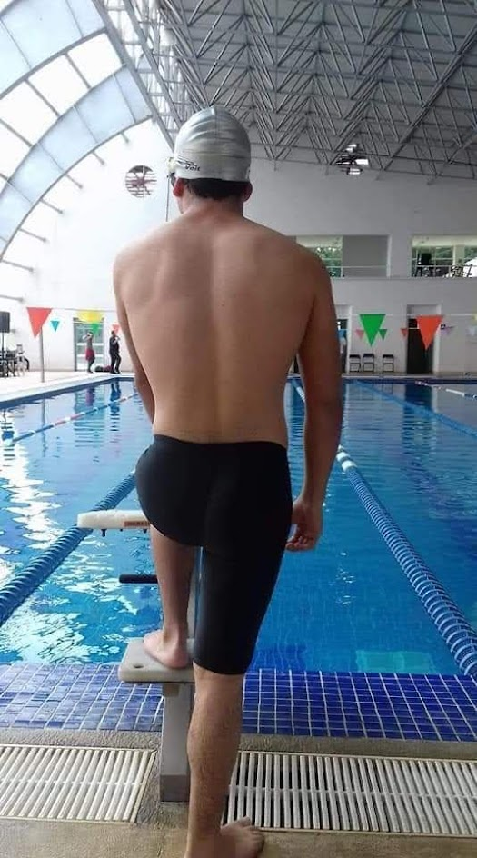

Bienvenid@.
Sobre mí
¡Hola! Mi nombre es Mario Yael Gordillo García, pero algunos me dicen Mael. Soy de Ixtapaluca, Estado de México, y actualmente estudio Ingeniería en Informática en UPIICSA IPN. Me considero una persona graciosa, hiperactiva y distraída, y siempre estoy buscando nuevas formas de aprender y mejorar. Me apasiona la programación, especialmente Python, por su simplicidad y la gran cantidad de aplicaciones que tiene en diferentes áreas.
Mis intereses
Además de la tecnología, me encanta la natación. Desde los 15 hasta los 19 años fui parte de un equipo de alto rendimiento, logrando clasificar a competencias estatales. Aunque ahora no compito, sigue siendo una de mis grandes pasiones. No tengo una meta definida aún, pero disfruto cada paso del camino y estoy emocionado por ver a dónde me lleva mi aprendizaje y experiencias
Hoy aprendi
- La etiqueta "h1" la cual es para establecer títulos.
- Si quiero escribir texto normal, puedo utilizar "p".
- También pude establecer una forma de navegar en el blog con "a href=el_lugar".
- Para agregar este formato de lista, implementé "ol" que me da un orden a la lista, seguido de "li".
- Posteriormente descubrí "article", que es un elemento independiente, aún no sé cómo aplicarlo bien.
- Usé "section" para agrupar contenido relacionado, como la sección de inicio y la sección del blog.
- Para mostrar una imagen, usé "img" con "src" para la URL de la imagen y "alt" para el texto alternativo.
- Incrusté un video de YouTube usando "iframe", que permite mostrar contenido externo en mi página.
- Creé una tabla con "table", usando "tr" para las filas, "th" para los encabezados y "td" para las celdas.
- Usé "header" para definir la cabecera de mi página, que incluye el menú de navegación.
- El menú de navegación lo creé con "nav", que contiene enlaces ("a") a diferentes secciones.
- Para el pie de página, usé "footer", donde incluí mi nombre y un enlace a GitHub..
- Usé "main" para envolver el contenido principal de la página, lo que ayuda a los motores de búsqueda a entender la estructura.
- Para hacer la página responsive, incluí "meta name=viewport" en el "head".
Horario de clase
| Día | Horario |
|---|---|
| Míercoles | 7:00 - 9:00 a.m |
| Jueves | 9:00 - 11:00 a.m |
Mi artista favorito "Kendrick Lamar"

Kendrick Lamar es un rapero, compositor y productor estadounidense, considerado uno de los artistas más influyentes del hip-hop moderno. Nació el 17 de junio de 1987 en Compton, California, una ciudad con una fuerte historia en la cultura del rap, siendo cuna de grupos como N.W.A.
Mi cancion favorita de Kendrick
Count me out
Mis Videojuegos Favoritos
The Witcher 3

Un RPG de mundo abierto con una historia profunda y personajes memorables.
Juegas como Geralt de Rivia en una aventura épica llena de decisiones morales y combates intensos.
Red Dead Redemption 2

Un western de mundo abierto con una historia increíble y gráficos impresionantes.
Controlas a Arthur Morgan mientras intentas sobrevivir en el salvaje oeste con tu banda.
Elden Ring

Un desafiante juego de rol con un mundo abierto fascinante y combates intensos.
Explora las Tierras Intermedias, derrota jefes imponentes y forja tu destino.